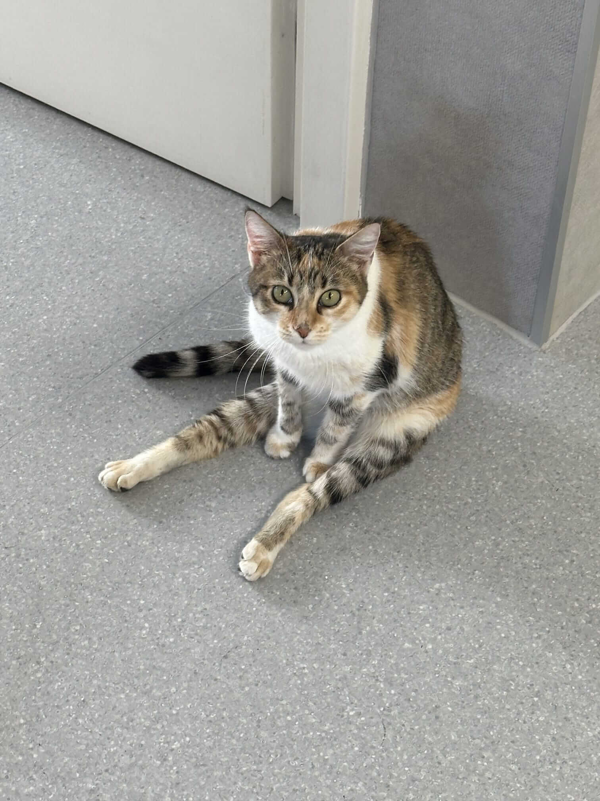
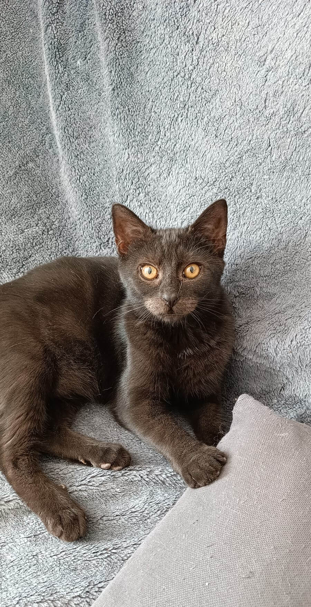
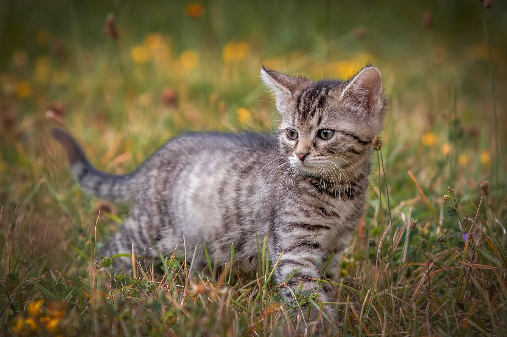

Zvažujete domácího mazlíčka, kterému byste rádi poskytli milující domov? Rádi byste
pořídili svému mazlíčkovi sourozence, se kterým budou společně dovádět a trávit celý svůj den? Nebo
byste chtěli parťáka, který bude pořád s Vámi? V naší školce čeká několik kočiček, které se těší na
své nové milující majitele. Pojďme si ukázat, jak takový proces adopce funguje.
Je nějaký chlupáč, který si získal Vaše srdce z fotogalerie? Nebo dáte raději na osobní dojem? V tom
případě nás kontaktujte pomocí SMS, Facebooku nebo e-mailu a napište nám něco o sobě a o Vaší
domácnosti. Zajímá nás, zda-li bydlíte v bytě nebo domě, kolik členů má vaše domácnost, nebo zda-li
na potenciálního mazlíčka čeká doma nějaký zvířecí sourozenec. Pokud bude vše v pořádku, domluvíme
si termín setkání, kde si povíme vše o daném mazlíčkovi. V případě zájmu adopce přichystáme adopční
smlouvu, kterou sepisujeme pouze s budoucím majitelem. Platí se také adopční poplatek 700
kč.
Proč se vůbec adopční poplatek platí a co vše v sobě obsahuje?
Koťata i dospělé kočky k nám většinou přicházejí ve špatném stavu. Jako základ je třeba kočku
odčervit a to minimálně dvakrát, některé je potřeba i vícekrát kvůli parazitům (blechy, klíšťata,
svrab). Dále je potřeba udělat testy FIV/FELV., provést očkování, v případě zdravotních problémů
zahájit léčbu a spousta dalších věcí.
Nákladnou částí dočasné péče je vybavení jako záchod, stelivo a krmení.
V neposlední řadě kastrace, která je velmi důležitá jak pro zdraví kočky, tak pro záchranu
nechtěných koťat.
U nekastrovaných koťat je podmínkou kastrace do 6 měsíců od podepsání adopční
smlouvy.
Pan beruška
Očkovaný a kastrovaný.
Pan Beruška je samostatná jednotka.
Vystačí si s kočkami, o člověka moc nestojí. Není mazlivý a nenechá se pohladit. Je takový od
doby, co byl nemocný a musel snášet příkoří léčby. Jeho sourozenec je Hopík.
Hopík
Očkovaný a kastrovaný.
Je to hodně chytrý kocourek, který
pořád přemýšlí, co by vyvedl. Má moc rád brášku Berušku. Má rád mazlení, pokud na něj má zrovna
náladu.
Bertík
Kastrovaný.
Dobře vychází s koťaty, s některými staršími
kočkami má problém. Rád si hraje, ale pohladit se nenechá. Většinu dne prospí někde schovaný.
Hledá domov pouze v bytě.

Hermionka
Postřelená kočička, ochrnutá na zadní část těla, ale je moc
šikovná a dělá obrovské pokroky. Hledá domov u někoho, kdo má dostatek času se o Hermionku
postarat. Je třeba 3x denně ručně vymačkávat močový měchýř a pravidelně cvičit. Vše vám rádi
vysvětlíme. Jsme ochotni pomoci s finančními náklady na péči. Hermionka čeká na nový domov v
Horní Suché, Moravskoslezský kraj.
Angua
Odvážná a mazlivá holčička.
Tonička
Zatím ještě trošku bázlivá, ale mazlení miluje.
Magráta
Tváří se, že o mazlení moc nestojí. Ale když dojde na věc, tak
se umí přitulit.
Šantal
Očkovaná a kastrovaná.
Velká, hrává kočka. Moc brzo se
stala maminkou, a i přes to se krásně starala o svých 5 koťat. Když chce, tak si přijde pro
pomazlení. S ostatními kočkami je kamarád a s dětma nemá problém.
Hledá domov buď v bytě
nebo s přístupem ven, ale pouze v klidné lokalitě.
Šišu
Očkovaný a kastrovaný.
Na člověka si nemůže nebo nechce
zvyknout. Ostatní kočky má moc rád. Většinu dne prospí, večer si hraje s kočkami. Nehodí se k
malým a aktivním dětem.
Domov hledá pouze v bytě.
Rebel
Očkovaný a kastrovaný.
Na člověka si nemůže nebo nechce
zvyknout. Ostatní kočky má moc rád. Většinu dne prospí, večer si hraje s kočkami. Nehodí se k
malým a aktivním dětem.
Domov hledá pouze v bytě.
Paní uhlíková
Kastrovaná a jednou očkovaná.
Paní Uhlíková je hodně hrává
kočička. Miluje dovádění s ostatními kočkami. Zatím není mazlivá, s rukou si spíše hraje.
Má chronickou rýmu a musí často brát antibiotika. Je možné, že ji pomůže změna prostředí, ale
taky může mít doživotně zdravotní problémy. Tato nemoc naštěstí není přenosná na ostatní
zvířata. Děti má moc ráda.
Hledá domov pouze v bytě s přístupem do postele, je to
rozmazlená kočička.
Narcis
Očkovaný, kastrovaný.
Hodně hravý a zvědavý kocour. Má rád
mazlení, ale jen když na něj má zrovna chuť. Nehodí se ke starším a klidným kočkám. Děti mu
nevadí.
Hledá domov v bytě nebo s přístupem ven v klidné lokalitě. Je hodně hravý a všechno
ho zajímá. S kočkami vychází dobře. K lidem ještě trošku bojácný, ale občas se nechá pomazlit.
Jork
Očkovaný a kastrovaný.
Hodně hyperaktivní kocourek, pořád
si hraje. Některé kočky tu jeho aktivitu nezvládají, takže se nehodí ke starším a klidným
kočkám. Děti má moc rád. Je mazlivý až když je unavený. Má neprůchozí slzní kanálek, takže musí
se 2-3x denně utírat očičko.
Hledá domov pouze v bytě.

Karma
Očkovaná.
Hodně hrává a mazlivá holčička. Kočky má ráda. S
dětmi taky vychází dobře. Miluje spát v posteli.
Nový domov hledá pouze v bytě.
Elza
Kastrovaná a očkovaná.
Hodně mazlivá kočička. Ostatní
kočky jí nevadí, ráda si s něma hraje. Děti jí nevadí a pokud ano, najde si klidné místo.
Domov hledá pouze v bytě.
Popel
Očkovaný.
Miluje kuličky z vlny, alobalu, gumy... Rád se drží v blízkosti chůvy. Když vaří, lehne si v kuchyni na židli a spokojeně oddychuje. Když zrovna nespí, zvědavě asistuje u všeho, co dvounožci dělají. Je velmi klidný a uvrněný.
Ďáblík
Očkovaný.
Když na sebe chce upozornit, šplhá po nohou chůvy. Miluje jídlo, je to pažravec a člověk si musí svůj talíř hlídat. Rád spí na škrabadle, úplně nahoře, se svou sestrou. Jinak je velmi klidný, stačí na něj promluvit a už přede. Rád se schovává v krabici a chytá cokoliv, co se hýbe.
Moskva
Očkovaná
Malá všetečka, co musí všemu přijít na kloub. Je nejvíce aktivní, miluje hlavolamy pro kočky, ráda každého provokuje, všude vleze, vyskočí... U jídla strašně mlaská.

Astrid
Očkovaná.
Hodně zvědavá holčička. U všeho musí být. Se vším pomáhá, hlavně u zametání. Ráda vymýšlí lumpárny. Hodně mazlivá
Duha
Očkovaná.
Hodně mazlivá holka. Ráda blbne a hraje si. Ráda cucá tričko u své člověčí maminky.
Rezek
Očkovaný.
Je postižený po prodělané nemoci. Občas ho neposlouchají zadní nohy a padá na bok. V ničem mu to nevadí. Akorát občas na záchodě padne do hovínka a musí se okoupat. Je hodně mazlivý a uvrněný.
Prcek
Očkovaný.
Je hodně hravý a mazlivý.
Kora
Očkovaná.
Hodně mazlivá holka. Moc ráda asistuje u uklízení. Je hodně zvědavá a pořád hladová.
Ibalgin
Moc hodný kluk. Hodně mazlivý. Má špatnou imunitu, tak často řešíme nějakou virózu. Snad brzy bude v pořádku a bude se moct naočkovat.
Mau
Očkovaná.
Hodně hrává holka. Pořád vymýšlí nové lumpárny. Na mazlení nemá čas, ale když vezmete do ruky mávátko pro kočky, nezbavíte se jí. Skvělé šplhá. Bohužel i po nohou když se chystá jídlo.
Zabiják
Očkovaný.
Je to hyperaktivní kluk. Pořád něco dělá, je všude, se vším pomáhá. Na mazlení nemá čas. Ale mávátko pro kočky miluje.